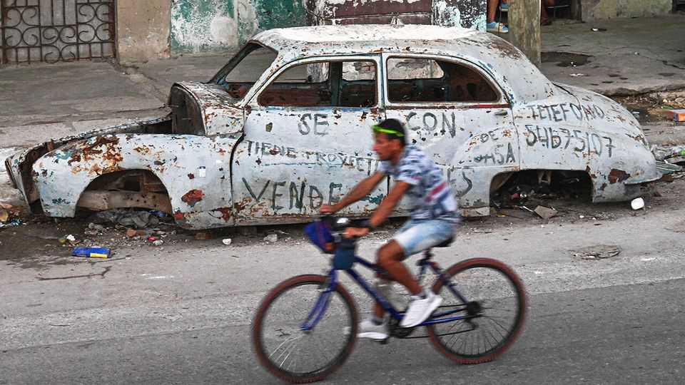

The Americas | Running on empty

On the evening of January 4th, a Sunday, Marco Rubio walked into church in a leafy Miami suburb to a standing ovation. One day earlier the secretary of state had stood beside Donald Trump at Mar-a-Lago, the president’s Palm Beach resort, as Mr Trump announced the extraction of Nicolás Maduro, Venezuela’s dictator, from his Caracas stronghold in an extraordinary night-time raid.
Mr Rubio’s fellow parishioners welcomed that operation, but many undoubtedly had another autocratic regime on their minds: the one in Cuba. Mr Rubio, who is 54, was not born there, but his passion to see his parents’ homeland freed from 67 years of Communist-Party rule has inspired much of his political career. Now he is in a position to make it happen.
Cuba is in economic free-fall. On January 29th the Trump administration placed an effective embargo on foreign-oil shipments to the island, saying it would put tariffs on any country caught sending fuel. On February 8th Cuba’s government notified airlines that aviation fuel would run out within a few days. Several airlines suspended flights. The regime has declared an emergency, instituting a four-day working week and reducing school hours.
Mr Rubio is one of the most powerful members of Mr Trump’s cabinet. He serves as both secretary of state and acting national security adviser. The only other person to hold both roles simultaneously was Henry Kissinger. While he appeared to be sidelined by some of the Trump administration’s special envoys on big foreign-policy projects in the Middle East and Ukraine, the Caracas raid has put him back in the spotlight. He is one of the architects of the president’s so-called Donroe doctrine, which prescribes dominance of the western hemisphere for the United States. “For Marco Rubio there is no better moment,” says Ricardo Herrero of the Cuba Study Group, which advocates for change in Cuba through dialogue and reconciliation.
Peaceful change would be far from simple to pull off. Unlike Mr Herrero, many of the 2.5m Cuban-Americans are hardliners. That includes south Florida’s three Cuban-American members of Congress. They want the Trump administration to impose even harsher measures on the regime, including a ban on family remittances to Cuba and a halt on all flights to the island by airlines based in the United States.
The White House doesn’t seem willing to go that far. It hopes instead that the fuel shortage will force the Cuban government to the table. Cuban officials have been pushing back, saying that discussions so far are preliminary, and that while they are open to dialogue, they will not change their one-party communist system.
If the regime holds firm, Mr Rubio will come under enormous pressure to adopt a more aggressive stance. But that could backfire. He could easily end up as the public face of an induced humanitarian crisis, along with another wave of Cuban “boat people” crossing the 140km (90 miles) of water to the coast of Florida.
Mr Rubio must also be careful to avoid falling out of step with the Trump administration’s MAGA base. They are typically isolationist, although many do come around to back whatever Mr Trump does. J.D. Vance, the vice-president, who is more aligned with Mr Trump’s core supporters, is also more sceptical of foreign entanglement than Mr Rubio. “Marco cannot afford to be too Cuban,” Carlos Díaz-Rosillo, an adviser to the first Trump administration, said at an event in Miami on February 6th.
That may be why Mr Rubio was circumspect when he appeared before the Senate Foreign Relations Committee on January 28th and was asked about Cuba. “We would love to see the regime there change,” he said. “That doesn’t mean that we’re going to make a change.”
The parallels between Venezuela and Cuba are limited. The Cuban regime is ideological and homogenous, where the Venezuelan one under Mr Maduro was split into factions and purely self-interested. Cuba’s security forces are also “more indoctrinated” than Venezuela’s, says Chris Sabatini of Chatham House, a think-tank based in London. Venezuela has abundant mineral wealth of the kind that allures Mr Trump. Cuba has little.
Given that, Mr Rubio is probably wise to string Cuba along. “Cuba is no longer self-sustaining,” says Mr Herrero. “Its only lifeline is the United States.” That may soon be more than a metaphor. Several sources tell The Economist that the United States is considering sending small quantities of fuel to the island: gas for cooking and diesel to keep water infrastructure running. Mr Rubio would gain even greater sway over his parents’ homeland. ■
Sign up to El Boletín, our subscriber-only newsletter on Latin America, to understand the forces shaping a fascinating and complex region.